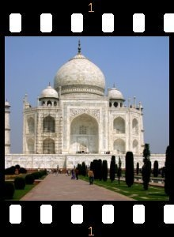

Figura 17.208. Applying example for the Filmstrip filter

Imagem original

Filtro aplicado
Filmstrip filter lets you merge several pictures into a photographic film drawing.
![[Nota]](images/note.png)
|
Nota |
|---|---|
|
Esse filtro não inverte as cores, ou seja, ele não imita negativo de filmes como aqueles usados para produzir impressões. Ao invés disso, você deve pensar que o resultado é uma imitação de um slide de filme ou de um filme de cinema. The drawing is a new separate image instance which would need to be saved separately, not a layer in any existing image. |

Filmstrip
- Mudar altura para caber as imagens
-
Aplica a altura da imagem original para a imagem resultante.
- Film height
-
Essa opção permite definir a altura da imagem resultante. Se as imagens originais possuirem tamanhos diferentes, elas serão redimensionadas para este tamanho.
- Film color
-
By clicking on the color button you can define the color of the film (around and between pictures).
Numeração
- Índice inicial
-
Define o número inicial que será usado para as imagens.
- Number font
-
Define a fonte dos dígitos.
- Number color
-
By clicking on the color button, you can define the font color of digits.
- Em cima, Embaixo
-
Define a posição do número.
Seleção de imagens
- Imagens disponíveis
-
Mostra as imagens que podem ser usadas para a junção. As imagens são aquelas já abertas anteriormente no GIMP.
- No filme
-
Mostra as imagens já escolhidas para serem juntas.
- Adicionar
-
Este botão permite ao usuário adicionar uma imagem disponível na seção “no filme”.
- Remover
-
This button allows to bring a picture from “On film” to “Available images”. After that, the picture will not be used anymore in the resulting document.

- Altura da imagem
-
Defines the height of each picture in the resulting image.
- Espaçamento das imagens
-
Define o espaçamento entre as figuras conforme elas serão inseridas na imagem futura.
- Deslocamento dos orifícios
-
Define a posição do orifício a partir da borda da imagem.
- Largura dos orifícios
-
Define a largura dos orifícios na imagem resultante.
- Altura dos orifícios
-
Define a altura dos orifícios na imagem resultante.
- Hole distance
-
Defines the space between holes.
- Altura dos números
-
Define a altura dos números de início, proporcionalmente à altura das figuras.